Overview
The Zebra WS301 device is an ultra-compact, fully functional Android mobile computer with built-in barcode scanning capabilities. It's designed to replace multi-device solutions that require both a mobile computer and a "ring scanner" or other external scanning peripheral. The WS301 can be worn on the wrist like a watch or clipped onto clothing. Its modular design and available accessories allow it to adapt to numerous use cases and scanning environments.
While the WS301 and WS501 both feature a two-inch display, the WS301 is equipped for scanning only with its camera, so it's smaller and much thinner than the WS501, and is less than half its weight. And aside from differences related to peripherals, physical controls and LEDs, the two are identical in terms of software.
Looking for the WS50 / WS501 Programmer's Guide?
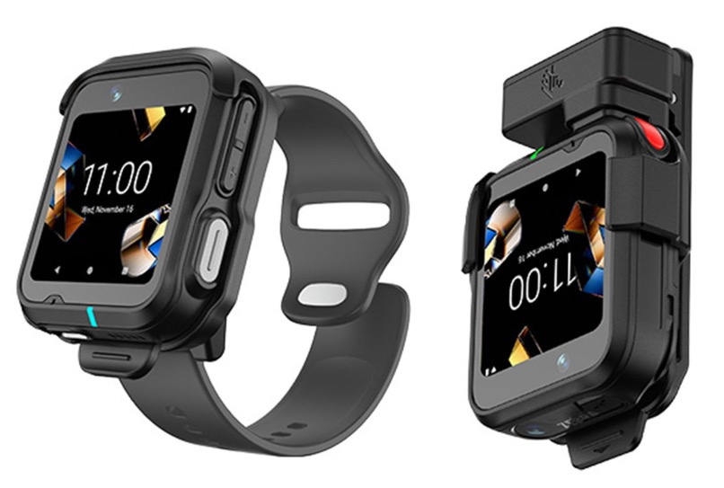 |
||||
| WS301 wrist-worn above, and clipped on (far right) |
Key industrial applications for the WS series include warehousing, transportation and logistics, manufacturing, retail, field service, healthcare, hospitality and many others. Warehouse workers can use them for receiving, item sorting and put-away; Transportation and logistics workers can perform high-intensity scanning with visual, audible and haptic feedback, and on-screen prompts help ensure proper package placement for loading bay, conveyor, etc. Manufacturing workers can benefit from real-time updates on machine function status and low component stock. Productivity can be improved in all sectors through peer-to-peer communications, task assignment and tracking, and many other applications.
WS301 Features and Controls
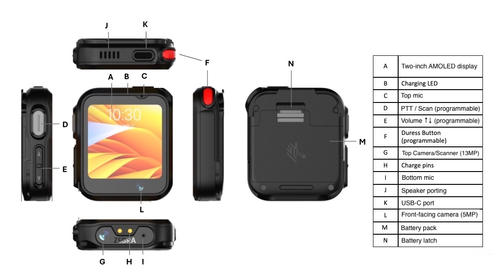
All controls and features of the WS301 Wearable Series computer. Click image to enlarge; ESC to exit.For more information and illustrations, see the WS301 Product Reference Guide.
Data Capture
Zebra recommends using DataWedge Profile0 for barcodes decoded by the camera scanner to be processed as keyboard input. However, the WS301 does NOT enable Profile0 by default; three ways to enable it are shown below.
Enable Profile0 manually:
- Locate the DataWedge app in the app drawer and tap it. A list of Profiles is displayed.
- Tap "Profile0" to enable it.
- Exit DataWedge.
Profile0 is enabled on the WS301.
Enable Profile0 by pushing a file:
On a full-sized device, open DataWedge to display the "DataWedge Profiles" page.
Locate and tap "Profile0" to enable it.
Return to the "DataWedge Profiles" page, tap the menu and select "Settings" from the menu:
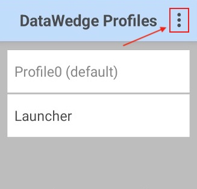
DataWedge Profiles list on the WS301.
Click image to enlarge; ESC to exit.Locate and tap "Export" to save the current settings. Tap "EXPORT" again to confirm, making note of the destination folder shown.
Get the exported file from the device and save it to an accessible location on the admin PC.
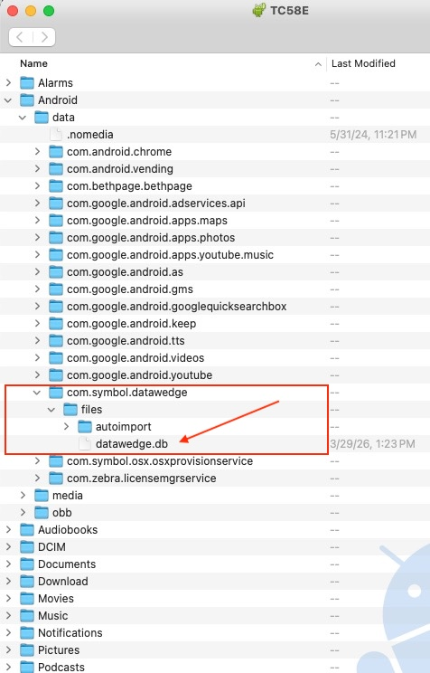
DataWedge folder structure on the Android device.
Click image to enlarge; ESC to exit.Push the Profile to the same folder on the WS301 device using the Android Debug Bridge or any compatible means:
adb push datawedge-enabledProfile0.db /sdcard/Android/data/com.symbol.datawedge/files/autoimport/datawedge.db
Profile0 is enabled on the WS301 next time DataWedge is launched.
Enable Profile0 with an intent:
Profile0 can be enabled programmatically using the DataWedge RESET_DEFAULT_PROFILE preconfigured intent. Learn more about the process and get sample code.
App/Device Compatibility
While the WS301 is built around a full-scale application processor and Android version, its two-inch display and 4GB RAM might require modifications to existing apps, UIs and workflows. In many cases, building an all-new app might be the most efficient route.
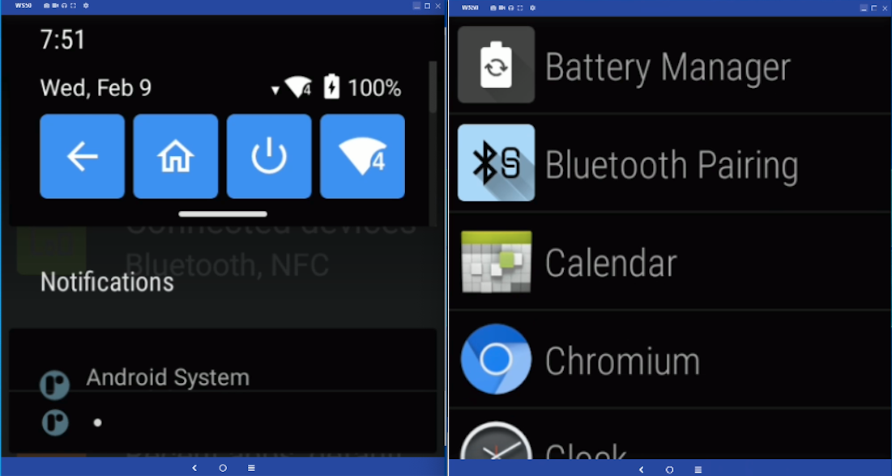
The Android 'Quick Settings' tiles (l) and Launcher.Click image to enlarge; ESC to exit.
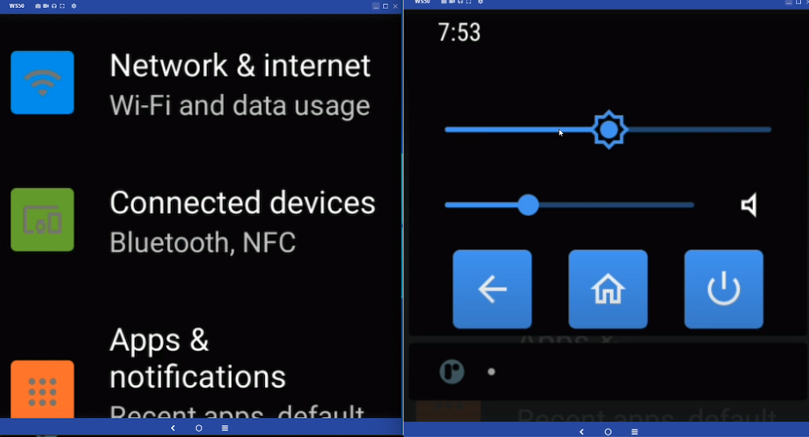
The Android Settings panel (l) and BACK, HOME and POWER buttons.Click image to enlarge; ESC to exit.
WS301 Device Variations
The resources available to developers in the WS301 differ from those of most other Zebra devices and wearable terminals. This guide addresses each of the variations and when possible, provides guidance and/or recommendations for additional development resources.
- Two-inch Screen Adaptations:
- Includes a small, scrollable soft input panel (SIP) for data entry
- Split screen functionality is disabled for all apps
- Status bar is hidden and Navigation bar removed to maximize screen space for apps
- Memory limited to 4GB RAM, 64GB internal storage
- No GMS capability
Zebra recommends reading Google's screen compatibility overview and guidelines for adapting apps to support different screen sizes. These and other useful links can be found in the "Also See" section at the bottom of this guide.
WS301 Specifications
Physical Dimensions
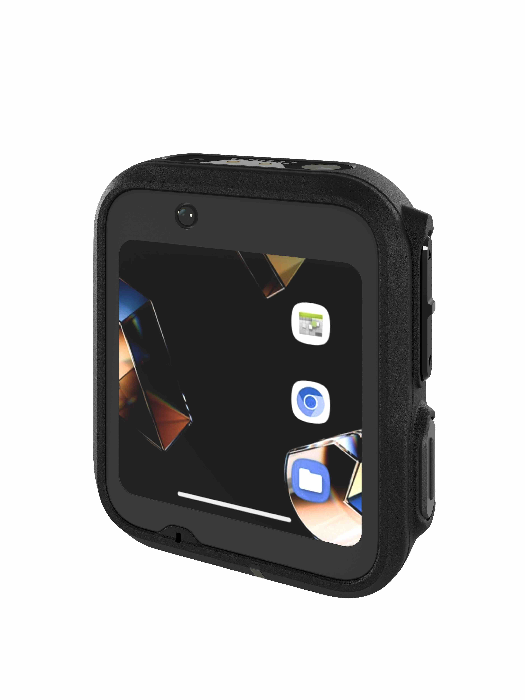 |
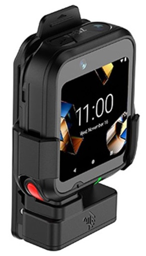 |
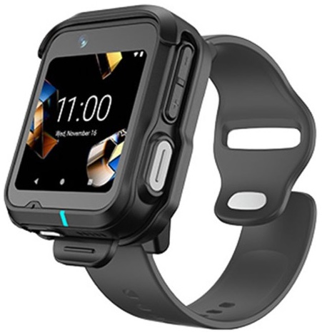 |
|
|---|---|---|---|
| Variant | WS301 device alone | W301 in clip mount | WS301 in wrist mount w/strap |
| Outer dimensions (LxWxD) | 2.2 x 1.89 x 0.59 in. (56 x 48 x 15 mm) |
3.39 x 2.09 x 1.14 in. (86 x 53 x 29 mm) |
2.52 x 2.05 x 0.59 in. (64 x 52 x 15 mm) |
| Weight | 2.08 oz. (59 g) | 3.07 oz. (87 g) | 3.10 oz. (88 g) |
Hardware Specs
- Display size: 2.0 inches (diagonal)
- Screen dimensions: 1.4 inches (35.88 mm) x 1.4 inches (35.88 mm)
- Max. resolution: 460 x 460 pixels
- Display type: AMOLED color display, optically bonded to touch panel
- Processor: Qualcomm QC2290
- Memory: 4MB RAM, 64GB Flash storage
- Battery: 2.91 Wh; 750 mAh; PowerPrecision+
- Battery life: Up to 10 hours continuous operation; supports fast charging
- Charging: USB-C, docking contacts, multi-slot "toaster" cradles
- Modalities: clip mount, wrist strap (supports 26 mm off-the-shelf straps)
- Sensors: 6-axis accelerometer, MEMS gyroscope, ambient light
- Radios:
- Bluetooth: 5.3, BR, BLE, EDR
- NFC: Tap to Pair, ISO 14443 Type A and B, Felica and ISO 15693 cards
- Wi-Fi: 802.11 a/b/g/n/ac/d/h/i/r/k/v/w/mc/ax; Wi-Fi 6; 2x2 MU-MIMO; IPv4, IPv6
- Cameras:
- Top-facing: 13 megapixel, auto-focus
- Front-facing: 5 megapixex, fixed focus, 120° FOV
See camera APIs
- Physical buttons:
- Multifunction: defaults to PTT while in mount, scan button when removed; programmable
- Volume buttons, Duress button (programmable)
- Notfications: Audible tone; charge and OS notification LED, haptic feedback
- Durability:
- Up to 4-foot (1.2 m) drop to concrete
- 1000 tumbles at 19.7 inches (0.5 m)
- Operating temperature 14˚F to 122˚F (-10˚C to 50˚C)
- Storage temperature: 40˚F to 158˚F (-40˚C to 70˚C)
- Humidity 5% to 95% non-condensing
- IP65 rating
- Data capture options: cameras, NFC
- Push-to-talk: embedded speaker, mic, Bluetooth headset (not included)
Software Specs
- Operating System: Android 14 AOSP (non-GMS)
- Custom soft-input panel. Go to section
- Mobility DNA includes an MX feature subset
- Compatible with Enterprise Mobility Management (EMM) systems
See the WS301 Product Reference Guide for additional hardware, software and device usage details.
Custom SIP
To facilitate keyed input on its reduced screen size, the WS301 comes with a custom software keyboard that's presented whenever an input field gains focus. The alphanumeric keyboard is presented in a scrollable window.
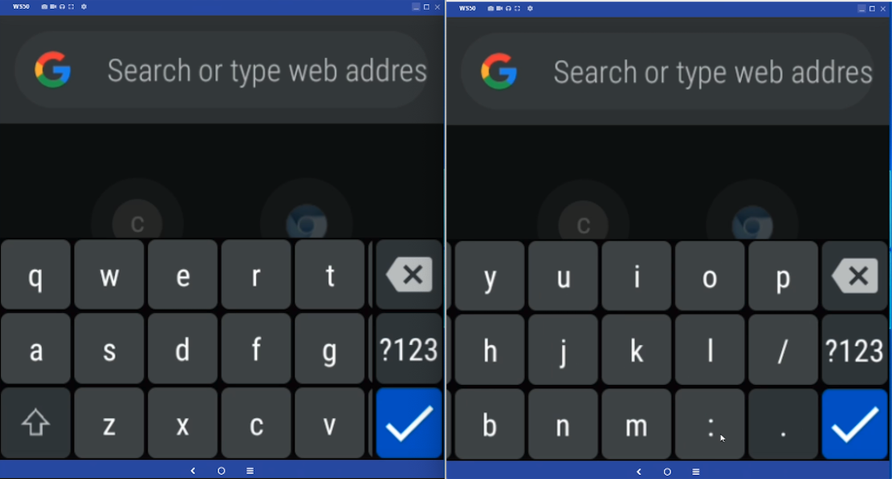
Standard QWERTY keyboard is scrollable across two screen widths.Click image to enlarge; ESC to exit.
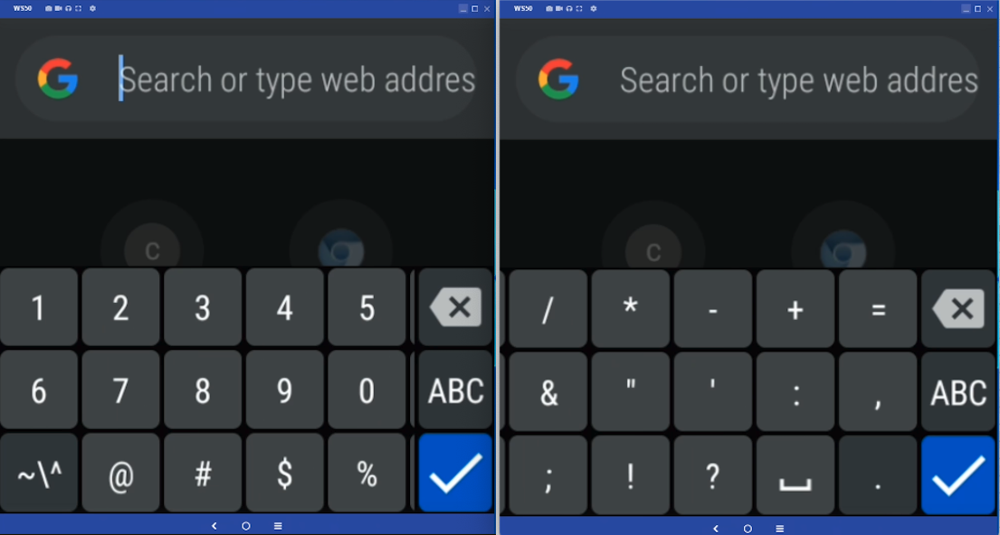
Numeric and special character layouts.Click image to enlarge; ESC to exit.
WS301 SIP Behavior
Numeric and special character layouts.
Click image to enlarge; ESC to exit.
- Displayed whenever an data entry field is detected
- Fields support all Android resources for defining field input and cursor movement, including:
- Force Initial Caps
- Force ALL CAPS
- Final action: (↵ multi-line, |> move to next field, √ end)
- The numeric/symbol layouts can be invoked programmatically or by tapping the corresponding key (i.e. "?123")
Learn from the Android development community about handling keyboard input
Key Remapping
All four of the WS301 buttons* can be fully or partially reprogrammed, according to the notes listed below. Default button mappings can be reassigned using Key Mapping Manager through Zebra DNA Cloud, StageNow or a company's own EMM system with OEMConfig. Wake-up Source designations are assigned through Power Manager.
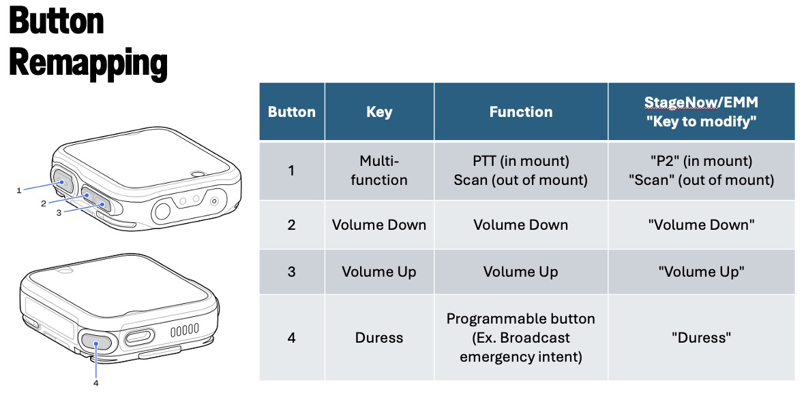
Remapping Notes
- By default, all WS301 buttons are configured to wake the device from sleep or suspend state.
- The "Wake-up Source" designation can be removed from all except the multi-function button ("1" above).
The multi-function button's long-press function is permanently designated for Power-On; it cannot be removed or remapped. - The multi-function short-press function can be remapped as desired.
- By default, the multi-function key automatically changes behavior depending on device usage:
- In clip mount: Push-to-talk (PTT) for Sync app and other compatible communications apps
- Device alone: Scan trigger for top camera-scanner ("G" in WS301 Features and Controls diagram)
* The terms "button" and "key" are used interchangeably in this guide, as are "remapped" and "reprogrammed."
RAM Usage
The RAM in the WS301 is limited to 4GB, which must be shared among the Linux kernel, Android app launcher, the Zebra software stack and other services, including a management agent in some organizations. This might leave apps with just a few hundred megabytes for operation. Developers must be mindful of this when designing their apps.
Memory Considerations
- Minimize the number of apps running at any one time
- Develop simple workflows and load only one or two tasks at a time
- Design single-task UIs that conform to UX/UI Considerations below
While the WS301 does NOT implement Android Wear OS, some of the principles of Wear OS might be helpful when developing apps for WS301 devices.
UX/UI Considerations
Zebra recommends using Google Material Design tools and its design guidelines as a foundation for starting new apps. See the video above for a quick overview. Zebra also advises observing the guidelines below when building UI screens from scratch.
Color Usage
With the unique characteristics of the WS301 display, it's helpful to keep the following in mind when selecting colors for use on the device.
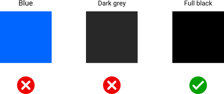
Avoid Blue
Blue is the most challenging color for the WS301 LCD panel to render, and its use impacts display longevity. If blue must be used, select warmer shades whenever possible.
Use "Full Black"
The WS301 display turns off each individual pixel in any region of the UI that's instructed to display "full black" (as opposed to very dark colors). This helps to maximize device operation while on battery and provides higher contrast ratios for UI screens. If the app displays black text on a white background, consider using the inverse.
Enable "Dark Mode"
Use "Dark Mode" for all apps that support it. Whenever possible, use full black (as described above) to minimize the power consumption of the OLED display.
Simplify UIs
Workflows and tasks should be broken into a series of simple, one-screen steps. This is critical for maximizing worker efficiency and minimizing user frustration caused by misplaced screen taps.
Touch Zones
According to a study of human fingertips and the mechanics of tactile sense conducted by the MIT Touch Lab , the average human fingertip is about 0.31 to 0.40 inches (8–10 mm) in diameter. Developers should therefore keep in mind that any physical area intended as a touch point that's smaller than 0.40 inches (10 mm) has the potential to create tapping errors with adjacent touch zones.
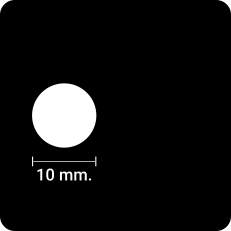
Average finger size on the actual display size.Click image to enlarge; ESC to exit.
Recommendations
Zebra recommends the following when designing WS301 app UIs:
- Minimum "hit zone" sizes for apps:
- Bare finger: 0.28 inches (7 mm)
- Gloved finger: 0.40 inches (10 mm)
- Minimum "touch zone" for two-inch display:
- 60 x 60 pixels (30 x 30 dp)*
- Border around each grid cell:
- 12 pixels (6 dp)
* For keyboard layouts, touch zones can be smaller. With a 2X scale ratio, dp values are half the pixel values.
What's a dp?
Modern UI tools use the term "density-dependent pixel" (dp) when referring to pixel-based screen spacing relative to a 160 dpi screen. This allows for the wide variety of screen densities available today. For example, 1dp (pronounced "one dip") is equal to one pixel on a 160-dpi screen and two pixels on a 320-dpi screen.
Example Layouts
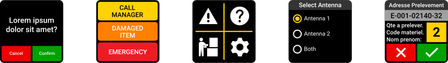
Click image to enlarge; ESC to exit.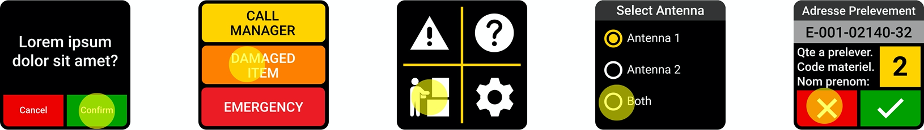
Click image to enlarge; ESC to exit.Touch Zones
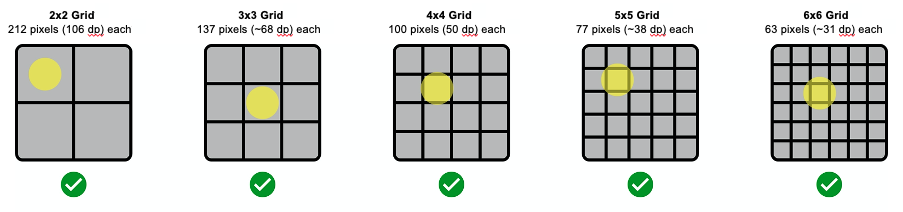
Click image to enlarge; ESC to exit.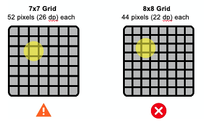
Click image to enlarge; ESC to exit.Radius Values
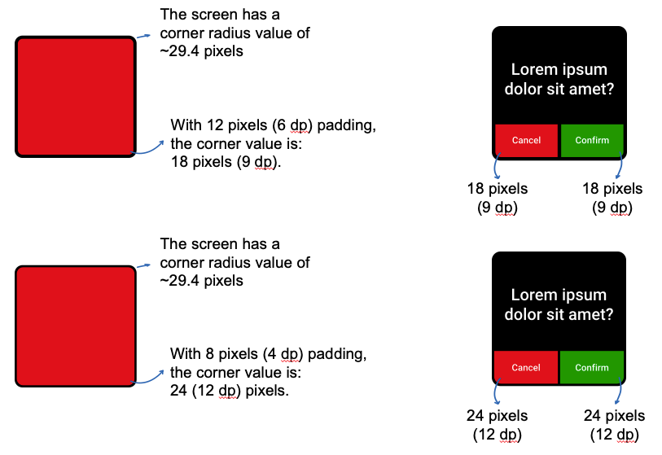
With a 2x scale ratio, dp values are half that of pixel values. Click image to enlarge; ESC to exit.User Interactions
When planning the app UI, the following specs and guidelines might be helpful.
- Native resolution of the WS301 is 460 x 460 pixels
- Zebra recommends a resolution of 230dp x 230dp (exported at 2X) when sketching apps
- For margins and spacing:
- Most measurements should align to an 8dp grid
- For iconography, typography and other small components, use a 4dp grid
- To avoid an "overcrowded" UI, set padding at 10–16dp
- Font size:
- Body copy: 14pt
- Captions: 12pt
- No text should be smaller than 12pt
- Limit the number of buttons on the UI (see examples):
- Two (2) buttons when presented with text and/or other info
- Three (3) buttons (alone), radio buttons or check boxes
- Four (4) buttons as icons (no text)
- Separate UI components by 12 pixels (6 dp)
- If displaying text, use short sentences to eliminate the need to scroll
- Link "bottom-of-UI" button pairs to physical buttons to give users a choice of interaction method
- Touch Zones such as buttons should in most cases be set to 60dp for most screen regions, and 80dp in areas close to screen edges. However, this recommendation is flexible since using the 80dp spec for a button bar across the bottom of the WS301 screen could contain only three buttons. Touch zones should be no less than 48dp.
- Produce paper prototypes to simulate an WS301 screen and visualize the app's UI design. The WS301 screen measures about 1.4 inches (35.88 mm) square, so be mindful about cramping more information and functions. Less is better for WS301.
- For Layouts it's usually better to implement a ConstraintLayout, which performs better and is more user friendly than relative layouts and scrollable view ports.
- "Tuck away" supplementary app info in a menu, "info" button or other access control to minimize impact on UI space.
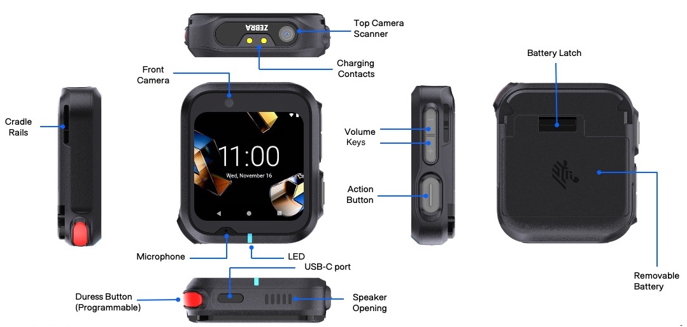
WS301 physical features and controls. Click image to enlarge; ESC to exit.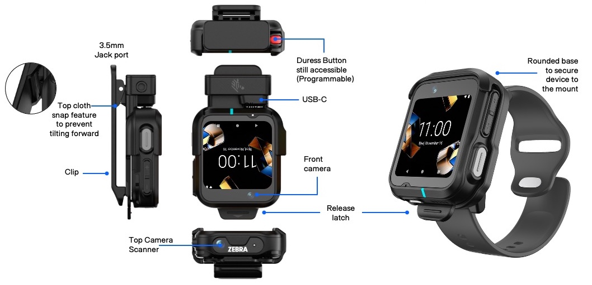
WS301 in clip-mount configuration (L) and wrist strap. Click image to enlarge; ESC to exit.Other Recommendations
Use hardware buttons
Users expect the ability to press buttons on the device to control app actions to start, stop, or pause activities. Buttons also help improve productivity and task completion times and reduce incorrect screen touches. Depending on device configuration, two or four of the WS301's physical buttons (plus a thumb trigger on some variants) can be assigned custom functions. See Key Remapping.
Use haptic feedback
Feeling vibration to confirm actions can help improve task accuracy and completion times.
Use touch lock
Disabling the touch capability can help improve the user experience in some cases. For example, in bouncy or other conditions where accidental touch is likely, it makes sense to disable touch to prevent incorrect or unwanted actions.
Design for critical tasks
The smaller display brings new challenges to the overall UX. UI components must be bigger to make the device easy to use. Designing the app for critical tasks should be the priority. Focus the UI on one or two tasks at a time rather than the full app experience.
Test for usability
Android apps designed for full-sized screens will have user experience issues when displayed on a tiny screen. App users will encounter buttons that are smaller than normal, small text that's difficult to read, clipped information and other usability issues. Thorough testing on the wearable device can help resolve these issues.
Prioritize features, content
Apps designed for Zebra's TC- and MC-series devices might contain features that are not applicable to the core use cases for wearable devices. Consider disabling such features in favor of the minimum content and features necessary for core use cases. Focusing on fewer components will increase user engagement with the device and simplify its usage.
Optimize for the wrist
Completing tasks quickly helps minimize ergonomic discomfort and arm fatigue. Consider the physical activities required for using the app and try to economize user motion whenever possible.
Voice Activation
The WS301 includes the Zebra WakeWord service and SDK, enabling third-party apps to receive wake-word detection callbacks and voice command data. For more information about Zebra WakeWord integration, refer to the Zebra WakeWord Integration Guide below.
- Zebra WakeWord Integration Guide (
.pdf):- View in browser
- Download the PDF
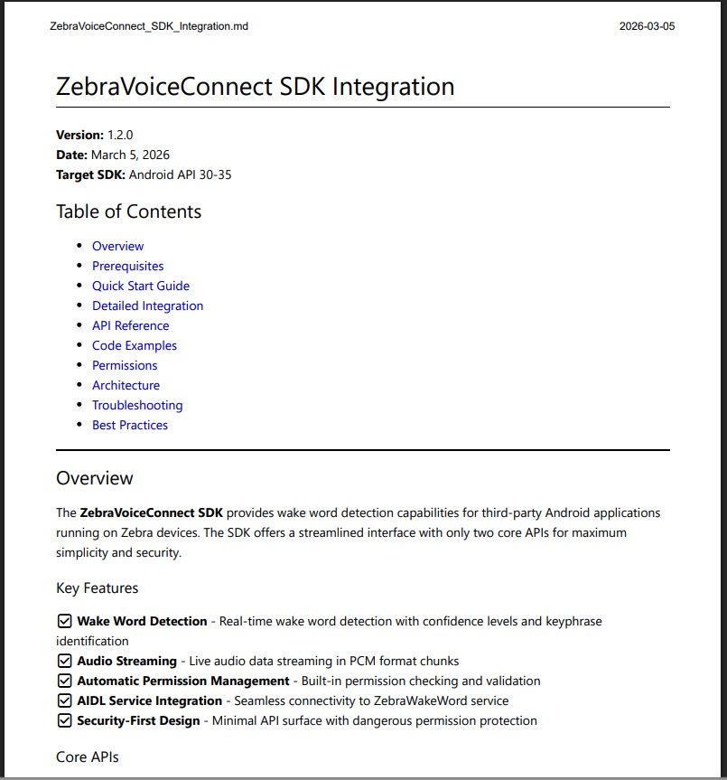
Camera APIs
Camera usage on WS301 devices is subject to the following guidelines and limitations:
- Zebra recommends using Camera API2, which supports devices running Android 5 and later.
- WS301 supports the following image formats only:
- JPEG
- PRIVATE
- YUV_420_888
- YV12
- To get supported size(s) for a format, use the
StreamConfigurationMap.getOutputSizes(format)method. - Limit camera apps to reported size(s) for normal camera operations.
- Due to its constrained hardware specs, WS301 is reported by
android.info.supportedHardwareLevelasLEGACY.
See CameraCaptureSession docs for information about working within these limitations. - WS301 is reported by
android.request.availableCapabilitiesasBACKWARD_COMPATIBLE.
See CameraCharacteristics docs for information about working within these limitations.
Power Management
The WS301's 750 mAh Li-Ion PowerPrecision+ battery is rated to provide a full 10 hours of continuous operation. However, battery performance varies greatly depending on usage patterns and device settings, especially those of the display panel. To maximize operation of WS301 devices while on battery power, Zebra recommends the following power-management best practices:
To Prolong Battery Life:
- Set screen brightness to the minimum level for effective use
- Set a short screen timeout interval (10-15 seconds)
- Reduce the device wake-up sources to include only controls not easily pressed accidentally. See keymapping section
- Ensure apps are managing activities during the Doze maintenance window
- Do not disable Doze mode (controlled by MX Power Manager)
- Do not "whitelist" an app for battery optimization (prevents Doze mode)
- Test apps to ensure proper operation when entering/exiting Doze mode
Android Studio Warning
When connecting the WS301 device to a development host computer, Android Studio sometimes displays a message similar to that shown in the image below:
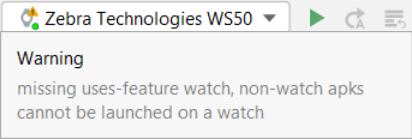
Android Studio warning can be safely ignored or supressed.To prevent display of the message above, add the following line to the app's manifest.xml file:
<uses-feature android:name="android.hardware.type.watch" required=”false” />
Also See
From Zebra Technologies:
- WS301 Product Reference Guide (HTML) - Complete online reference of physical and technical specifications of the WS301 with Android 14 (or later)
- WS301 Product Reference Guide (PDF) - Complete specs of the WS301 with Android 14 (or later) in portable document format (PDF)
- WS301 Product Page | Information, specifications, accessories, support and other relevant links
- WS301 Specifications | Physical characteristics and specs
- WS301 MX Feature Matrix | List of all supported Zebra Mobility Extension (MX) features and links to full details of each
- DataWedge Programmer's Guide | Features, limitations, usage and recommended practices
- Truck-loading Demo App | One method of implementing a warehouse workflow using DataWedge
From the Android development community:
- Screen compatibility overview | Adapting apps to different screen sizes and pixel densities
- Declare restricted screen support | Limit an app's execution to specific screens, if desired
- Principles of Wear OS | Some UI and task-based development techniques found here can apply to WS301
- Android ARGB specifications | Android app ints, longs and color instances
- Handling keyboard input | Tips for a great user experience when manual data entry is required
- Camera version support | Differences between camera APIs and HALs, and compatibility test suites